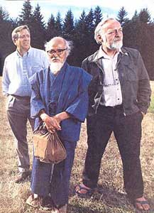
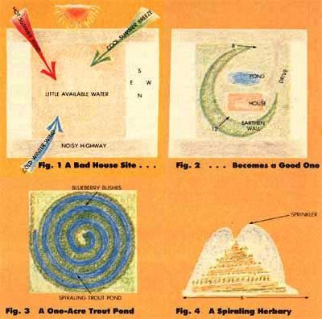
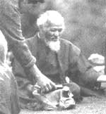

Last August, three leaders of the global movement for a natural, permanent agriculture (also called permaculture) gathered at The Evergreen State College in Olympia, Washington, for the Second International Permaculture Conference. MOTHER was there, too, obtaining the only three-way interview ever with the men our Seasons of the Garden columnists half-playfully labeled "the Holy Trinity" of ecological farming. The following edited discussion is a head-to-head exchange between men who are taking key roles in defining our planet's future. But first let assistant editor Pat Stone, who conducted the interview, fill you in with some background on the three subjects:
Australian Bill Mollison created the concept of permaculture. A gravel-voiced graybeard, Bill has a dry sense of humor, a feisty temperament, and absolute dedication to his cause. Introduced before his keynote conference speech as "a great yarn teller who's motivated thousands of people to action," Mollison has held every job from seaman to Tanzania bush researcher to senior lecturer in environmental psychology. He left that secure university position two years before retirement to blaze the permaculture trail.
To Mollison, permanent agriculture means carefully designed, sustainable systems in which the array, organization, and interactions of plants and animals are the central factors. Perennial plants-especially tree crops-play a large role in his multispecies landscapes. A permaculture system takes much planning, and a good bit of work, to set up, but it should then almost run itself.
Wes Jackson researches perennial crop mixes in Salina, Kansas. A hulking midwesterner with broad hands and a ready smile, Jackson combines a warm nature, downhome humor, and impeccable scientific scholarship (he has a Ph.D. in genetics). For example, his favorite lecture title is "Herbaceous Perennial Seed-Producing Polycultures: Their Contribution to the Solution of All Marital Problems and the End of the Possibility of Nuclear Holocaust."
At his 200-acre Land Institute, Wes and his research staff are working to breed a mixture of perennial sunflower, rye, and other plants that could produce an ongoing yearly seed harvest on the midwestern prairies. This high-yielding system would sponsor its own fertility, have minimal pest and weed problems, and require no erosive annual tillage. The self-maintaining food system would be designed by humans but follow the principles of nature. "It's not that humans don't learn faster than nature," Jackson says. "It's just that nature's been at it a lot longer."
And Masanobu Fukuoka-it would be difficult to fully understand this fascinating man. The short, kimono-clad Oriental is essentially a Buddhist monk who has chosen the path of farming. He speaks no English, but his gentleness communicates itself at a glance. (Those twinkling eyes also reveal that a playful imp shares a place with the humble philosopher.)
Fukuoka was an agricultural scientist who, after a serious illness, had a "flash of insight" that nature was perfect, while human knowledge was meaningless. He set out to prove these ideas through farming and has been raising rice, barley, and citrus on a small commercial farm since World War II. Fukuoka advocates what he calls "do nothing" farming: He has used no tillage, no fertilizer, no weeding, and no pesticides for four decades, and still achieves grain yields as high as conventional Japanese farmers. An example of his techniques: He wraps his barley and clover seeds in clay pellets, and broadcasts them into his maturing rice crop. Later, he scatters rice straw into the sprouting barley. The straw mulch and permanent clover ground cover suppress weeds and promote soil fertility.
Today, Fukuoka-san (san is the traditional Japanese form of respectful address) has distilled his lifestyle as well as his farming methods. Having given most of his possessions to his family, he lives alone in a tiny but and owns three sets of clothes.
Australian, Kansan, and Japanese-these three present a broad view of the ways a truly natural farming could help save our soil and our planet.
MOTHER: Maybe the best way to start is to simply ask each of you about the purpose of your life's work.
MOLLISON: I'm a very simple person. All I want to do is regreen the earth. That's what I work on all the time.
JACKSON: For me, the purpose is to save soils, to get off the fossil fuel nipple, to quit introducing those chemicals into the environment that our tissues have not evolved within effect, to run agriculture on sunlight.
FUKUOKA: Part of my purpose is to create a society where no one has to do anything.
MOTHER: I beg your pardon?
FUKUOKA: [Draws a picture of a man sleeping under a tree].. This is a natural farmer, sleeping in the sunshine. He does no fertilizing, no plowing, no weeding-almost no work. You could say I have been sleeping for 40 years, yet my yields are as high as those of the farmer who works all the time.
MOTHER: Fukuoka-san, could you briefly explain the difference between your natural farming method and conventional farming?
FUKUOKA: Natural and scientific farming are diametrically opposed. One seeks to approach closer to nature, the other to move farther away. Scientific research discriminates, breaks down, and analyzes, so by definition scientific knowledge is fragmented and incomplete.
But nature is an indivisible whole. There is no starting point or destination, only an endless flux. To learn from nature, you must get rid of your preconceptions, your analyses, your intellectual distinctions. Make the inside of your head empty. Do not think anything. Become a foolish man. Be like the baby who sees everything at once, holistically. Then you can understand nature and instinctively understand what needs to be done -and what must not be done-in order to work in harmony with its processes.
One problem, though: To do natural farming, a person must know what unaltered nature is. People misunderstand nature by looking at the imitation nature people have created. You cannot be a natural farmer by abandoning nature after it has been altered. Instead, you have to carefully select seed and determine when, where, and how to grow it but only after first examining the land and the real nature of an area.
MOTHER: Bill, do you think Fukuoka's type of natural farming is included in permaculture?
MOLLISON: It's not only included but welcomed. Actually, until Fukuoka wrote The One-Straw Revolution, I had a mind set against all grain farming, so I didn't include any references to it in my first book, Permaculture One. Now I know that the approaches of both these other gentlemen fit naturally into the permaculture framework. Indeed, Fukuoka-san and I are basically the same person.
MOTHER: All three of you believe in an environmentally sound agriculture that uses an integrated mix of plants and no tillage at all. But I sense that there are some real differences among you.
MOLLISON: I think we're three aspects of a simple endeavor to do one thing. Fukuoka-san works in nontillage grain production. Wes is concerned with prairie revitalization and developing a good-yielding perennial grain. I, and many others who labor with me, work with edible plants and also with health, land, and financial integration to support environmentally sound enterprises.
JACKSON: I would say that Fukuoka-san works a lot with herbaceous annuals. He's trying to take advantage of the natural integrities within current, traditional crops. Mollison emphasizes landscape design, edible landscaping, and so forth. At the Land Institute, we're trying to put together sustainable, herbaceous, perennial ecosystems for farmers.
We're also trying to determine what biological principles may be at work. That's one of the most important contributions of our efforts: discovering the principles of ecosystem agriculture. These principles would be applicable in Chad, the Soviet Union, Japan, or anywhere.
We're trying to become ecosystemologists who use a dialectical whole-system approach, not a Cartesian part-over-whole approach. And let me tell you, that's hard. To help us maintain such an interconnected approach, we're hoping to create a natural, physical connection between our soil scientist, plant breeder, ecologist, entomologist, and plant pathologist. They'll use the same laboratory facilities and all have their names on any papers produced. We hope that shared environment will help dictate a pattern of holistic, ecosystem thought and behavior.
FUKUOKA: No time, no time. If you take such a step-by-step approach, by the time you get your results, it will be too late. Besides, can Mr. Jackson really be on top of this research center? Each department will develop centrifugally; unity will be very difficult to achieve.
There's another way. Don't carry out your research by asking, How about if we tried this? How about if we tried that? Instead, go in the opposite direction and ask, What if we don't do this? What if we don't do that? After 30 years of such efforts, I have managed to reduce my own labor essentially to just sowing seed and spreading straw.
JACKSON: This is a healthy difference of opinion about the role of science. Our current scientific knowledge has come at the expense of forests, soils, and fuel. To regard that knowledge as damnable simply because it was accumulated at a cost of a lot of ecological capital is to treat it the same way we treated those forests and soils. We can't do that now. We need to turn that knowledge to work toward the regeneration of the earth. It has the potential to be regenerated, just like any smaller landscape does.
FUKUOKA: Mr. Jackson, how well do you think humanity knows nature?
JACKSON: Well, of course, we don't know nature very well. But ever since the beginning of agriculture, we've had to figure out how to work with nature as much as possible. To do it well, I think we must ask, Is science an inherently alienating force in society? That question should always be before us, because if we are scientists first and human beings second, we can't afford to ask that question. But if we are human beings first and scientists second, we can't afford not to ask that question.
I think perhaps you are reacting to the current personality of science. I don't believe that science has to alienate us from nature. Let's hope a future science would have high precision along with a higher measure of humility about its own imperfections and the mysteries of nature.
FUKUOKA: The confusion started when humans ate the Fruit of Knowledge. Adam and Eve were thrown away from the Garden of Eden. The only way to get back is to throw away the knowledge! Just become foolish like a bird or baby.
I understand Mr. Jackson's scientific approach. I used to have the same view when I was a scientist. You can just think of us three as being on the horse of Don Quixote. It looks like we are saying different things, but we are really on the same horse. The horse is running toward disaster. Wes Jackson's trying to stop the feet of the horse. Bill Mollison's trying to turn the head of the horse. (Laughs) I'm just hanging onto the horse's tail!
MOTHER: It would be difficult to ignore the hint of doom coloring this conversation. Just how bad do you three feel our current situation is?
MOLLISON: Modern agriculture is the single most destructive activity on the face of the earth. If we're going to make things better, we have to do it soon or not at all. I'm absolutely convinced of that. I travel a tremendous amount, and I've seen signs of the collapse of large systems everywhere.
JACKSON: Agriculture's high yields create an illusion of success, but they're really just the result of transferring fossil carbon into the carbon of agricultural products. If there were a full accounting, we would have to say that modern industrial agriculture is the least efficient and most devastating form of agriculture to ever be invented-it undercuts the very basis of our existence.
To me, agriculture is the number one environmental problem, aside from the possibility of nuclear holocaust. All in all, we're facing the most dangerous situation that the human race has ever found itself in.
FUKUOKA: The food produced in the U.S. is not produced by soil, but by oil. Herbicides, pesticides, fertilizers-oil, oil, oil. If such chemical agriculture continues, this earth will be destroyed a lot sooner than you expect.
One day the trendy people will say, "Did you notice so-and-so is eatingannuals?"
MOLLISON: I'll concentrate merely on the destructive catalytic reactions we're causing in the atmosphere. Chlorinated chemicals now seem to be destroying the ozone layer over the Antarctic-creating an ultraviolet window larger than America which will sterilize the earth if it widens.
In addition, there's the problem of CO, buildup. Even if we stop now, with the present levels of CO,, science predicts we will at least partially melt down the ice caps. That's already started. Then we'll have to evacuate the coastlines of the world. That's due to the overuse of yesterday's sunlight-fossil fuels -and the destruction of green matter, which absorbs CO2
FUKUOKA: If we lose just 3°7o more of the greenery on the earth, we're just not going to make it. There's going to be a critical oxygen shortage that will affect human beings' feelings and way of thinking.
MOLLISON: Oxygen deficits are really critical now in Greece. You'll see a serious oxygen shortage there soon.
JACKSON: I doubt it. I don't think that oxygen shortage is the issue.
MOLLISON: He thinks it's the carbon surplus.
JACKSON: I think deforestation should stop, but oxygen loss due to deforestation is a minuscule problem compared to the increased burning of fossil fuels and the accelerated loss of soil carbon due to erosion, etc. But we all agree that the place is in trouble. We could sit around here and nitpick on the details and spend most of our time stating our assumptions, but the important thing is that we all agree the positive thing to do is to try to get more vegetation growing and keep as much year-round ground cover as possible.
MOTHER: How are your three efforts at this progressing?
MOLLISON: I'm working with people who are going the next step beyond property design-into economics. We're using ethical investment and innovative financing to fund a whole raft of businesses in small communities. Our goal is to create people polycul tures whose purpose is to create and preserve permacultures, or stable systems. In parts of Australia, we have almost achieved this.
We're also developing more permaculture teachers. And we're trying to preserve those species-rich areas which still exist. For instance, we'll soon purchase a threatened rain forest by setting up a unit trust. You can resell your share; you just can't change the rain forest. Sometimes we buy damaged areas, repair them, and then preserve them.
FUKUOKA: There is no natural farming in Japan. In China, they've started a 1-million-hectare natural farm. There's some natural farming happening in India and the United States. It hasn't started yet in Africa, but I can feel the people's strong interest.
JACKSON: One of the basic problems in our attempts to increase perennial yields is that, in general, a perennial plant's very nature resists such attempts. Whereas an annual puts its energies into seed production to guarantee future generations, a perennial neglects its seeds and puts most of its energies into a surviving root system. So the first basic question we've had to ask is, Can perennialism and high yield go together?
We're getting enough encouraging results that I can now say the answer is yes. I look forward to the day when the trendy people in a natural food restaurant around Berkeley or Cambridge say, "Did you notice that so-and-so is still eating annuals?"
Seriously, I firmly believe that if we can get high yields from a perennial cross for three years running, perennialism will have a major impact on agriculture. But I figure this will all take 50 to 100 years.
MOTHER: What else needs to be done?
MOLLISON: To escape disaster, we need to open a broad-scale discussion on defining the future, the way they discuss political issues on TV in Sweden. We had a five-part television series in Australia recently called "Heartlands," which showed examples of positive action individuals are taking-and it had the largest viewing audience in the nation's history.
If we don't get the media into this discussion soon on a global basis, it may be too late. Perhaps we should take charge of local radio and television stations and present case after case for action to the people of the United States and all countries. Get good scientific speakers on it. Get people who have sensible suggestions about reversing things on it. My own passion is to locate enough small examples everywhere to allow us to teach continuously that permaculture works in Fiji, in America, in Sydney because we've got people everywhere making it work.
Let's divert major investment funds toward regreening earth, first of all by telling a lot of people how to do it for themselvesa lot of people. Indeed, gardening self-reliance in your backyard-is the biggest cure for the agriculture problem.
JACKSON: I have a hard time speaking for the rest of the world because I haven't been around. I've never been to Africa or Asia. Why, Bill here may be from the next county for all I know. I haven't been there, either.
What I can speak for is American agriculture, which is probably the major agricultural liability in the world. Unfortunately, it has also become the idealized standard throughout much of the world. The trouble with American agriculture is that it's overcapitalized. Four-wheel-drive tractors cost $120,000; combines run $80,000. Studies now show that if an average farmer has $10,000 to spend, it's more cost effective to hire a person than to buy more equipment.
This is a good sign. It would not be going backward. What we need for a resilient, biological agriculture is to have lots of people on the land: a high eyes-to-acre ratio.
MOLLISON: Foresters, he's talking about. Foresters tending tree crops.
JACKSON: In the top 20 crops there are only two trees-banana and coconut, numbers 19 and 20. When you're really serious about food, you eat grains and legumes. (Laughs) Considering Bill's strong point of view, I think that statement took bravery on my part!
I'm saying that to make sustainable agriculture work, we need more small farmers. You have to keep your systems small enough that you can keep observing and learning. I think that having landed small farmerswhat Jefferson had in mind-is not nostalgia but is a practical necessity. Achieving that is the challenge for our time.
I do agree with Bill that the first thing we have to do is find the good examples that already exist around the country and make them highly visible. I don't know if we should spread the word through a journal or word of mouth or what-I'm not as fond of the idea of using television as Bill is. But there are some people who have been doing sustainable agriculture for years, and only God has been watching.
You know, the problem of agriculture isn't insurmountable. It's fundamentally a religious problem. Land is not a gift from God. We don't own it. What we have is the right to use the land. We have no right to damage it. Instead, we have to obey what is effectively a commandment: We are to care for God's garden.
MOTHER: Fukuoka-san?
FUKUOKA: Even if we practice natural farming-and that's something we have to do-I have a feeling it will still be too late. If we cannot change the way of agriculture now, it will be too late.
MOTHER: Do you three really think that's true? Can we turn things around, or do we have to face an agricultural Armageddon?
MOLLISON: I agree with Mr. Fukuoka that there is not much time. However, while disaster, if it strikes, will affect agriculture and may well have been caused by agriculture, it won't happen in terms of agriculture.
We won't wash all the soil away before we finally unbalance the atmosphere.
And I don't have any great optimism that we'll survive. Not long ago, we asked something like 900 Australian scientists to help us call on all Australians to get together and discuss ways to change the environmental future. Seven hundred of them wouldn't help. They said it was already too late.
What I do have is the determination to give whatever chance there is a go. But we all have to get to work. The time for gathering evidence is over. There is only time for action. No more spectators. Only players.
JACKSON: Well, I think things will get worse before we begin to make a significant turn. We don't have to wonder about that; things will get worse.
You have to realize that the scale of the problem is much broader than we thought: Agriculture is not a satellite out there in need of fixing. Our whole society will have to move away from vertical energy-that is, fossil fuel energy, the ancient energy-to harvesting horizontal energy, contemporary energy, such as wind power, hydroelectricity, etc.
But we can do better. I'm certainly hopeful.
FUKUOKA: There's one last chance. In sumo wrestling, there's a way to win at the very last moment. When a big wrestler pushes a little wrestler back, back, back, just as the little guy is back at the end of the ring, he uses the weight and power coming at him, and flips the big man over his shoulder. The big wrestler is thrown out of the ring, and the little one wins.
Our world leaders must have a great courage and be this sumo wrestler. They must take the bombers and the missiles that are loaded with implements of war and throw the bombs away. Then pelletize seeds of all different types of vegetables, of fruit trees, of grains. Load the missiles up with the seeds, shoot them up, and spread seeds all over the earth. Scatter them over the deserts. Cover the imitation green pastures and lawns.
In the first year, after rain comes, everything will come up here and there-it may look like a mess. The second year, nature will begin to tell you which plants will grow well where. In the third year, microorganisms, earthworms, and small animals will increase and start making the soil rich.
Then when there is food for people everywhere, they won't be in such an uneasy, confrontational state of mind. People's attitudes will change. You'll regreen the earth, fix the ecological crisis, fix the economic crisis, and give people the chance to find happiness.
And then there can be peace.
After growing and analyzing some 4,300 accessions from all over the world, we have selected six herbaceous perennials to manipulate genetically and to include in our ecological experiments.
One species is eastern gamma grass, a relative of corn that has three times the protein and 1.8 times the methionine. It also fixes small quantities of nitrogen. It's an "ice cream grass" for cows and is highly nutritious for humans, too. However, it's low-yielding. In the next county north, though, a mutant was picked up that produces two to three times the initial yield. Once developed, this could replace corn, wheat, and soybeans on sloping hillsides in high-erosion country.
Then there's sorghum, a useful perennial that's not winter-hardy. We crossed sorghum with Johnson grass until eventually we got a mix of 1,500 plants. Some 455 of them lived through last winter-making it the first winter-hardy herbaceous perennial to ever be produced by humans on purpose.
Our wild senna plots yielded 830 kilograms per hectare in 1982, and 900 kilograms per hectare in 1985. This is important because it indicates that a perennial crop plant can keep producing a good yield year after year.
We did a biculture experiment of Illinois bundle flower, which fixes nitrogen, and wild senna, which doesn't. In the first year, the two species together yielded the same as they did in monocultures. By the third year, though, the biculture produced almost twice the yield of the monoculture.
We're also encouraged by results from our perennial Maximillian sunflower. It's allelopathicthat is, its roots exude a chemical that acts as an herbicide. There's also giant wild rye, which grows on sandy lakeshores in Siberia. It shows good promise for high yield. It sent up shoots in January, thinking it was spring in Siberia, I guess.
Permaculture is designed agriculture, and one of the most important aspects of good design is patterning.
Here (Fig. 1) is a square lot with a particularly busy road in the back. It has noise from the back, little water, hot summer winds from the southeast, and an occasional cool summer breeze from the southwest. In the winter, cold winds come from the northeast. What can you do to make this an attractive house and garden site?
Construct a curved-earth, plant-covered wall that rises from eight inches at its beginning to 12 feet at its peak around a house and pond (Fig. 2). The wall provides privacy, blocks out the noise, and protects from both the hot and cold winds, while its opening channels the cool summer breeze toward the house. The pond provides water and reflects warming winter sunlight toward the house. This partial spiral pattern thus solves all the problems.
Suppose, on a different site, you want to build a one-acre trout pond and also grow blueberries. How can you get the most trout and blueberries?
Since trout live and breed along the pond edge and blueberries planted beside the pond will have more water, the more edge you have, the more production you'll have. So maximize edge by extending the pattern in the first example and spiraling your pond (Fig. 3).
That same pattern is a good template for a small herbary. If you raise it in the center (Fig. 4), so the whole thing is a climbing terrace, you can have 43 running feet of growing room for herbs in a circular space just six feet across-watered with just one sprinkler set at the top!
Such designs can boost the productivity of a system tremendously. Indeed, the more permacultures I see and work with, the more I've come to believe that there are no biological limits to yield. There are only design limits.
I broadcast rye and barley seed on separate fields in the fall, while the rice in those areas is still standing. A few weeks after that I harvest the rice, and then spread its straw back over the fields as mulch. The two winter grains are usually cut about May 20. However, two weeks or so before those crops have fully matured, I broadcast rice seed right over them. After the rye and barley have been harvested and threshed, I spread their straw back over the field to protect the rice seedlings, enrich the soil, and hold back weeds. I also grow white clover in these same fields.
As for citrus, I grow several varieties on the hillsides near my home. First, I had to recondition the red clay soil on the hillsides by planting clover as a ground cover and allowing the weeds to return. I also introduced a few hardy vegetables-such as the Japanese daikon radish-and allowed the natural predators to take care of insect pests. As a result of that thick weed/clover cover, over the past 30 years, the surface layer of the orchard soil has become loose, dark, and rich with earthworms and organic matter. In my orchard there are now pines and cedar trees, a few pear trees, persimmons, loquats, Japanese cherries, nitrogen-fixing acacia, and many other native varieties growing among the citrus trees.
I raise vegetables, in a semiwild manner, among the weeds all over the mountain. In my orchard alone I grow burdock, cabbage, tomatoes, carrots, mustard, beans, turnips, and many other kinds of herbs and vegetables.
To plant my vegetable crops, I simply cut a swath in the weed cover and put out the seeds. There's no need to top them with soil: I just lay the cut plants back over them as a natural mulch. Usually the resurgent weeds have to be trimmed back two or three times afterward to give the seedlings a head start, but sometimes just once is enough. You can raise produce wherever there's a varied and vigorous growth of weeds, but you have to become familiar with the yearly cycle of the indigenous weeds and grasses and learn what kinds of vegetables will best match them.
1. Since humanity first dabbled with agriculture, we've eliminated almost half of the earth's plant and soil cover.
2. American agriculture causes the erosion of nine tons of soil per acre per year: the equivalent of one inch every 16 years.
3. American agriculture now uses 40 million tons of commercial fertilizers each year, at a cost of over one-fifth of our nation's annual supply of natural gas.
4. Over 80°70 of our nation's water is consumed on farms and ranches.
5. Agriculture is now our leading polluter of streams .and ground water.
6. Since 1942, crop loss due to insect pests has doubled; insecticide use has increased tenfold.
7. Globally, agriculture has used more oil than industry.
The center of American permaculture efforts and education is The Permaculture Institute of North America, 6488 Maxwelton Rd., Clinton, WA 98236. A one-year membership in PINA costs $25, includes a subscription to the institute's quarterly newsletter and magazine, and is the quickest way to learn about our country's permaculture network.
All three interview subjects have books and tapes available from PINA. Bill Mollison's Permaculture One and Permaculture Two cost $12.50 each. Masanobu Fukuoka's new 280-page explanation of his ideas and methods, The Natural Way of Farming, costs
$15.95, while his earlier One-Straw Revolution is $3.95. And Wes Jackson's excellent 150-page critique, New Roots for Agriculture, costs $6.95. Include $1.25 for shipping and handling when ordering one or two books, $2 if ordering three or more. You can also obtain cassette tapes of each man's conference speech and of their joint panel for $5.75 each postpaid.
For information on Jackson's Land Institute, its triannual magazine, and ways you can support his work, write The Land Institute, Rt. 3, Salina, KS 67401.
Another fine resource guide, filled with articles and access information, is the 1986 1nternational Permaculture Species Yearbook, which is available for $13.75 postpaid from Yankee Permaculture, Box 202, Orange, MA 01364.
|
|
 |
|
|
 |
 |
|